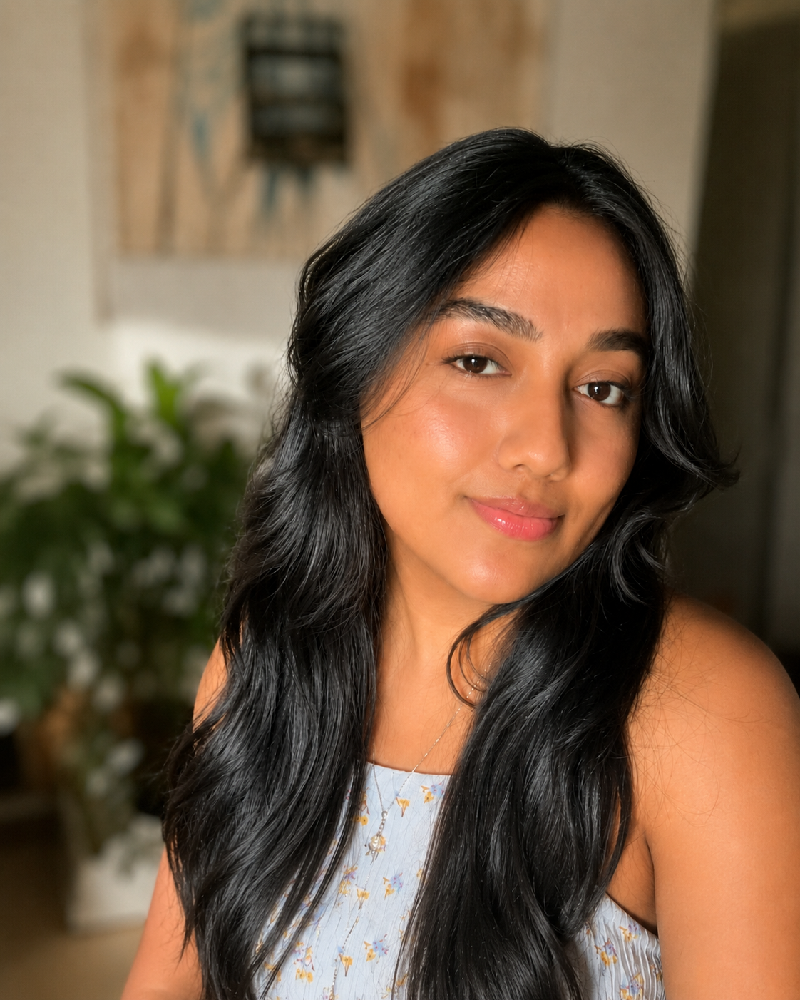

Ilda Galindo

Un encuentro casual que se convirtió en una historia que ambos recordamos con afecto.
Ilda, conocida por muchas personas como Gabriela, y para mí simplemente Gaby. Es originaria de Honduras y una persona a la que recuerdo con mucho cariño por una etapa breve, pero muy especial, que compartimos en mi vida.
Nos conocimos de una manera muy casual, cuando ella vino a mi casa a comprar algo que yo ya no necesitaba. Desde que llegó, me pareció una chica muy alegre, atractiva y con una energía muy agradable. Ese día intercambiamos números de teléfono y, poco a poco, empezamos a escribirnos y a conocernos mejor.
Después quedamos para salir. La pasamos bien, conversamos, compartimos tiempo juntos y nuestra amistad fue creciendo. Después de algunas semanas de conocernos, esa amistad poco a poco se convirtió en algo más. Un viaje de camping que hicimos juntos fue el momento en que quedó claro que ya no éramos solamente amigos. Desde entonces comenzamos a compartir una conexión distinta y a crear recuerdos que todavía guardo con cariño.
Durante ese tiempo, Gaby llegó a conocer a algunos de mis amigos y también a mi hermano. Salíamos a bailar, íbamos a la playa y compartimos varios momentos que recuerdo con mucho cariño. Fue una relación que no duró demasiado, pero que se vivió intensamente y con mucha sinceridad.
Había una diferencia importante de edad entre nosotros, aproximadamente quince años, y con el tiempo ambos entendimos que veíamos muchas cosas de manera diferente. Más adelante me mudé a otra ciudad y, entre la distancia y los caminos distintos que cada uno iba tomando, la relación fue terminando poco a poco.
Aun así, guardo un recuerdo bonito de esa etapa. Creo que ambos aprendimos cosas importantes de la relación y de nosotros mismos. Hoy seguimos siendo amigos y conservamos un cariño sincero. Me da mucho gusto saber que está feliz y que ha vuelto a encontrar el amor.
Gaby siempre ha sido una persona muy cariñosa con los animales. Recuerdo que tenía un gatito y más adelante también tuvo un perrito. Esa sensibilidad y ese cariño por los animales es una de las cosas que siempre asociaré con ella.
Aunque la vida nos llevó por caminos diferentes, siempre recordaré con aprecio los momentos que compartimos, las conversaciones, las salidas y la amistad que quedó después de todo.